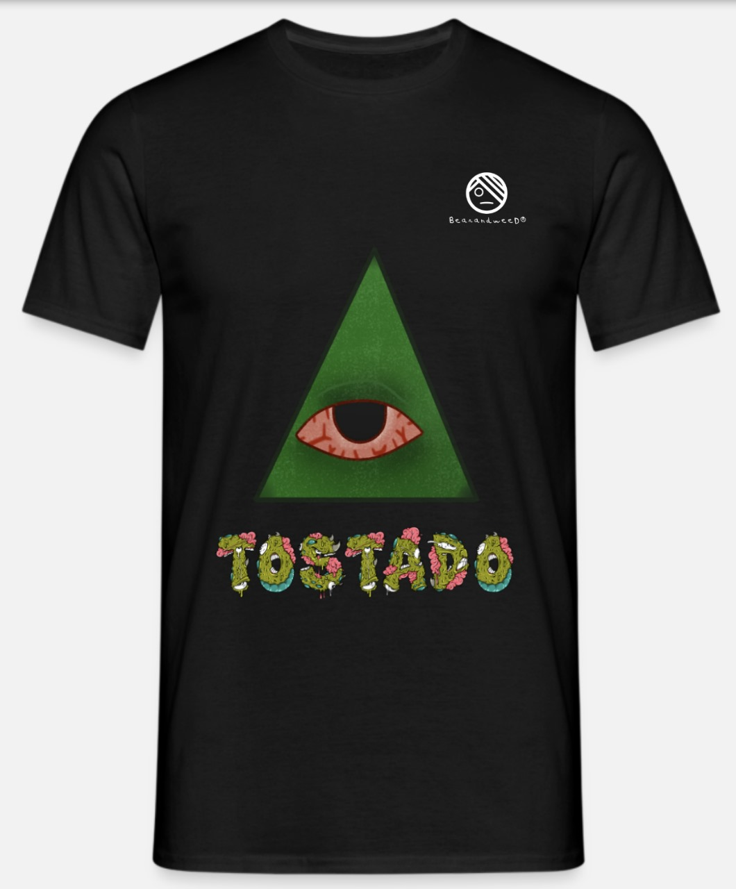

Quizás te pueda interesar nuestra historia (o no)
BeerandWeed nació en 2024 de la mente inquieta de un grupo de jóvenes que querían romper con los moldes tradicionales de la moda. Inspirados por la cultura urbana, decidieron crear una marca que fuera más que solo ropa: una expresión de actitud y autenticidad. La idea surgió en una pequeña reunión entre amigos, donde las conversaciones sobre moda y estilo se mezclaban con ideas para cambiar el panorama. Hoy, BeerandWeed es la voz de una nueva generación que busca libertad en la manera de vestirse y vivir.
Nuestro logo hace referencia al gusto por la satira y un tipo de humor diferente, no queremos que nuestra empresa sea de esas mismas de siempre, la nuestra es unica y con un chispa que llama la atención al publico joven. Siempre queremos dar lo mejor de lo mejor, para lo mejor (los clientes).
- 
El primer diseño de camisa, fue la Camisa Tostado, surgió de la combinación de ideas entre el equipo de Bearandweed, algo sencilla, ya que era solamente un prototipo, pero quizás el dato sirva, puede que se vuelva algo exclusiva de la empresa.